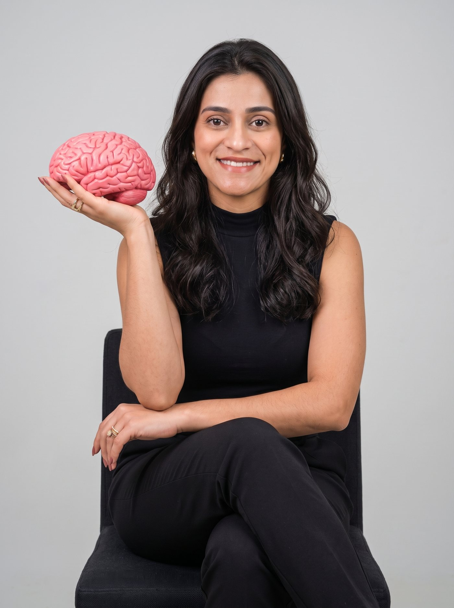
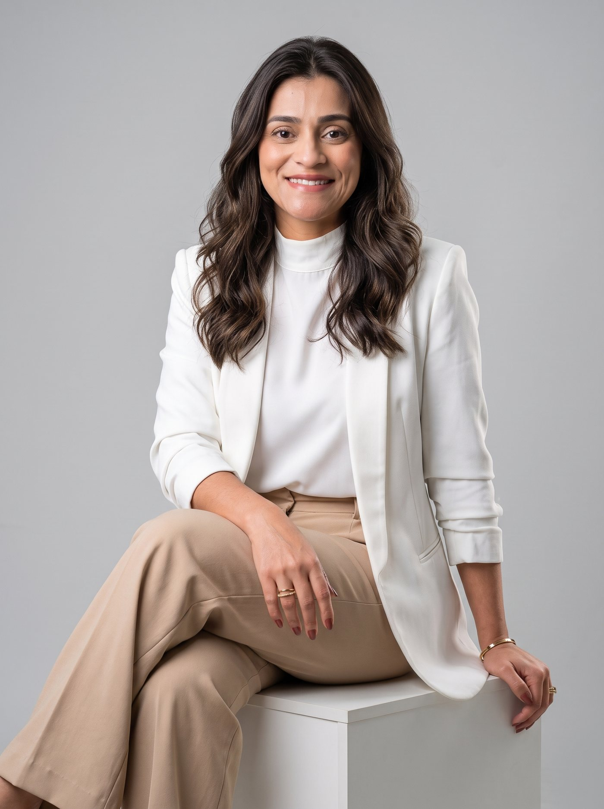

TDAH
Investigação de desatenção, impulsividade e hiperatividade, em crianças e adultos, com orientações práticas para o dia a dia.
Avaliação neuropsicológica e psicoterapia para crianças, adolescentes, adultos e idosos, com um olhar humano e baseado em evidências.

Sou psicóloga e neuropsicóloga, especialista em avaliação neuropsicológica e em transtornos do neurodesenvolvimento. Meu trabalho é investigar como atenção, memória, linguagem e aprendizagem funcionam em cada pessoa e transformar esse mapa em orientações que fazem diferença em casa, na escola e no trabalho.
Na psicoterapia, atuo com Terapia Cognitivo-Comportamental (TCC) e princípios da ABA, sempre com atendimento humanizado e apoiado em evidências científicas.
Investigação de desatenção, impulsividade e hiperatividade, em crianças e adultos, com orientações práticas para o dia a dia.
Avaliação cuidadosa e acompanhamento da família, com estratégias que respeitam o jeito de cada pessoa se comunicar e aprender.

Entender por que ler, escrever ou fazer contas custa tanto e como a escola e a família podem apoiar.
Avaliação do funcionamento cognitivo para planejar os apoios e os estímulos certos para cada fase da vida.
Investigação de esquecimentos e dificuldade de concentração em adultos e idosos, para separar o esperado do que merece cuidado.
Terapia cognitivo-comportamental para ansiedade, emoções e comportamento, presencial ou online.
Avaliar não é rotular. É observar com testes validados, entrevistas e a história de vida, para dar nome ao que a pessoa já sente e abrir caminho para o cuidado certo.
Cada avaliação termina com uma devolutiva clara: o que foi encontrado, o que isso significa e quais são os próximos passos para a família, a escola e os outros profissionais envolvidos.
O objetivo é que você saia entendendo o seu filho, o seu cônjuge, o seu pai ou você mesmo, e com um plano possível de seguir.
Agendar uma consultaSe você já se pegou pensando:
Você não precisa ter certeza de nada. Uma primeira conversa já é um bom começo.
Quero conversarUm processo claro do início ao fim. Você sabe em que etapa está e o que vem depois. Cada pessoa tem o seu ritmo.
Escuto a queixa, a história e o que você espera. Aqui definimos se o caminho é avaliação, psicoterapia ou os dois.
Entrevistas, testes e observação, no ritmo de cada paciente. Em crianças, também ouço a família e, quando possível, a escola.
Explico os resultados com clareza, entrego o laudo e traço as orientações para casa, escola e outros profissionais.
Quando indicado, seguimos com psicoterapia e ajustes de estratégia conforme a vida acontece.
Avaliação neuropsicológica sempre presencial, no consultório, em um ambiente acolhedor e preparado para receber crianças e adultos. Psicoterapia presencial também disponível.
Agendar presencialPsicoterapia por videochamada, com a mesma qualidade do consultório, para quem mora longe ou tem a agenda apertada.
Agendar onlineAv. Antúrios, 140 A
Jardins de Eunápolis, Eunápolis, BA
CEP 45828-630
Telefone: (73) 3191-2574
Ver no Google MapsNão encontrou a sua resposta? Me chame no WhatsApp e a gente conversa por lá.
Falar no WhatsAppÉ uma investigação do funcionamento do cérebro por meio de entrevistas, testes padronizados e observação. Ela mostra como estão atenção, memória, linguagem, raciocínio e comportamento, e ajuda a esclarecer ou descartar diagnósticos como TDAH, autismo e dislexia.
Para crianças, adolescentes, adultos e idosos que apresentam dificuldades de aprendizagem, atenção, memória, comportamento ou desenvolvimento, ou que precisam de um diagnóstico bem fundamentado.
Depende de cada caso: idade, queixa e quantidade de testes necessários. Na conversa inicial eu explico como será o seu processo e quantos encontros você deve esperar.
A avaliação neuropsicológica é presencial, no consultório em Eunápolis, porque os testes exigem aplicação direta. A psicoterapia pode ser presencial ou online.
Uma devolutiva explicando os resultados, o laudo com as conclusões e orientações específicas para a família, a escola e os demais profissionais que acompanham o paciente.
Não é obrigatório. Muitas famílias chegam por indicação da escola, do pediatra ou por iniciativa própria. Se houver relatórios ou exames anteriores, traga: ajudam bastante.
A Terapia Cognitivo-Comportamental é uma abordagem baseada em evidências que trabalha a relação entre pensamentos, emoções e comportamentos, com foco em estratégias práticas para o presente.
Preencha o formulário e eu retorno para entender o seu caso e encontrar o melhor horário na agenda.